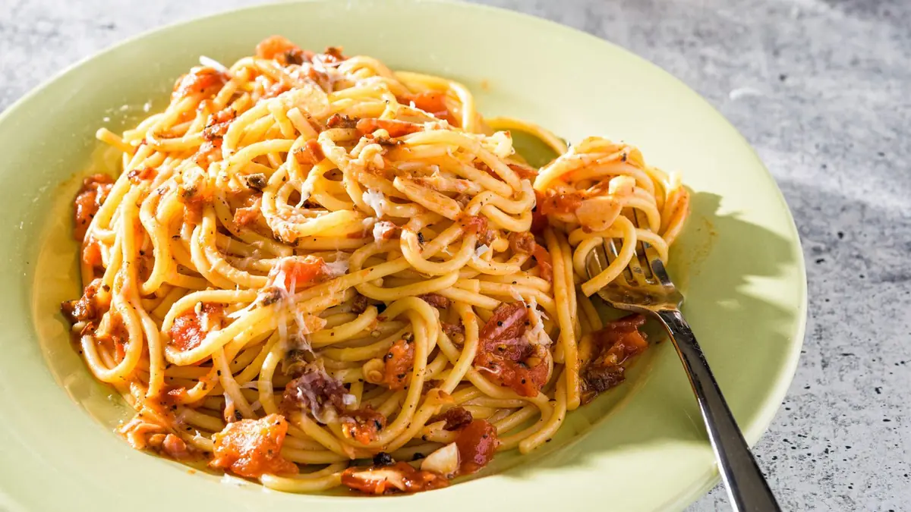

Pasta all' Amatriciana
- Total time30 mins
- Serves4
- Ingredients9
- Steps5

Ingredients
- 3 tablespoons extra-virgin olive oil, divided
- 3 ounces thinly sliced pancetta, finely chopped
- 10 medium garlic cloves, thinly sliced
- 1/2 teaspoon red pepper flakes
- 3/4 cup dry white wine
- 14 1/2-ounce can whole peeled tomatoes, drained, juices reserved, tomatoes crushed by hand into small pieces
- 1-ounce chunk pecorino Romano cheese, plus more finely grated, to serve
- Kosher salt and ground black pepper
- 12 ounces spaghetti
Directions
- In a 12-inch skillet over medium, heat 1 tablespoon of the oil until shimmering. Add the pancetta and cook, stirring, until well-browned and crisp, 5 to 7 minutes. Using a slotted spoon, transfer to a paper towel-lined plate and set aside.
- Return the skillet to medium and add the garlic; cook, stirring, until light golden brown, about 2 minutes. Stir in the pepper flakes and cook until fragrant, about 30 seconds. Add the wine, increase to medium-high and cook, stirring, until most of the liquid has evaporated, 5 to 7 minutes. Add the draioned tomatoes and cook, stirring, until heated, about 2 minutes. Stir in 3 tablespoons of the reserved tomato juice, then remove from heat.
- Meanwhile, in a large pot, bring 2 quarts of water and pecorino chunk to a boil, stirring occasionally to prevent the cheese from sticking to the pot. Stir in the pasta and 2 teaspoons salt. Cook, stirring often, until the pasta is just shy of al dente. Remove and discard the pecorino, then drain the pasta in a colander set in a large heat-safe bowl; reserve the cooking water.
- Set the skillet over medium-high, stir in 1 1/2 cups of the reserved pasta water and bring to a simmer. Add the drained pasta, tossing with tongs. Cook, stirring occasionally, until most of the liquid has been absorbed, 3 to 6 minutes.
- Off heat, stir in the remaining 2 tablespoons oil, the pancetta and 2 teaspoons black pepper. Transfer to a serving bowl and serve with grated pecorino on the side.
Recipe credit: Milk Streets Tuesday Nights by Christopher Kimball